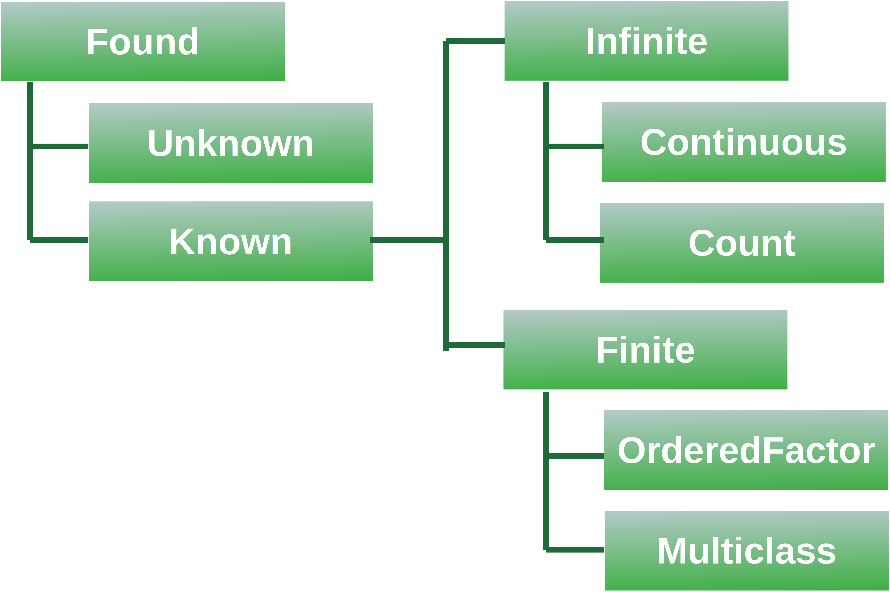
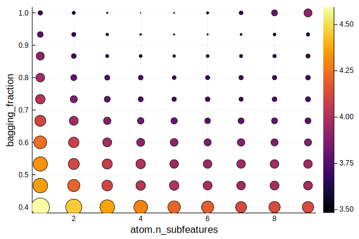
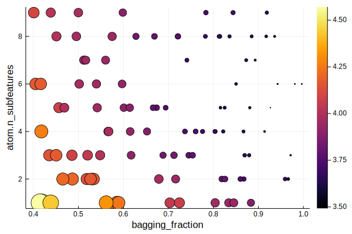
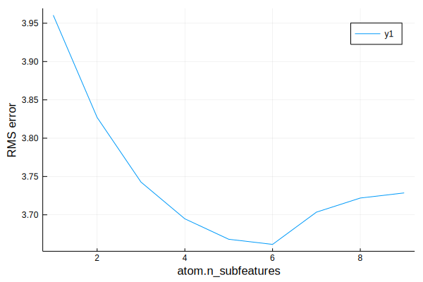

class: center, middle # Introduction to MLJ #### Yueh-Hua Tu #### 2020.11.20 --- # A Machine Learning Framework for Julia <img src="https://raw.githubusercontent.com/alan-turing-institute/MLJ.jl/master/material/MLJLogo2.svg" width="30%" style="display: block; margin-left: auto; margin-right: auto;"> -- * 100% Julia implementation. * Integration of over 150 classical machine learning models. * Full-featured model training/testing and selection strategies. * Convenient syntax to composite models. * Consistent interfaces for probabilistic prediction. * Leveraging modern techniques, including automatic differentiation, GPU, parallelism. > [MLJ Github](https://github.com/alan-turing-institute/MLJ.jl) --- # Introduction <img src="https://raw.githubusercontent.com/alan-turing-institute/MLJ.jl/master/material/MLJ_stack.svg" width="70%" style="display: block; margin-left: auto; margin-right: auto;"> > [MLJ Github](https://github.com/alan-turing-institute/MLJ.jl) --- # Features ### Models as objects ```julia booster = @load EvoTreeRegressor booster.max_depth = 2 booster.nrounds=50 ``` -- ### Pipeline ```julia pipe = @pipeline ContinuousEncoder booster ``` --- # Features ### Model tuning ```julia self_tuning_pipe = TunedModel(model=pipe, tuning=RandomSearch(), ranges = max_depth_range, resampling=CV(nfolds=3, rng=456), measure=l1, acceleration=CPUThreads(), n=50) ``` -- ### Decouple data preprocessing and model settings ```julia mach = machine(self_tuning_pipe, X, y) ``` --- # Features ### Model evaluation ```julia julia> evaluate!(mach, measures=[l1, l2], resampling=CV(nfolds=6, rng=123), acceleration=CPUProcesses(), verbosity=2) ┌───────────┬───────────────┬────────────────────────────────────────────────────────┐ │ _.measure │ _.measurement │ _.per_fold │ ├───────────┼───────────────┼────────────────────────────────────────────────────────┤ │ l1 │ 16700.0 │ [16100.0, 16400.0, 14500.0, 17000.0, 16400.0, 19500.0] │ │ l2 │ 6.43e8 │ [5.88e8, 6.81e8, 4.35e8, 6.35e8, 5.98e8, 9.18e8] │ └───────────┴───────────────┴────────────────────────────────────────────────────────┘ _.per_observation = [[[29100.0, 9990.0, ..., 103.0], [12100.0, 1330.0, ..., 13200.0], [6490.0, 22000.0, ..., 13800.0], [9090.0, 9530.0, ..., 13900.0], [50800.0, 22700.0, ..., 1550.0], [32800.0, 4940.0, ..., 1110.0]], [[8.45e8, 9.98e7, ..., 10500.0], [1.46e8, 1.77e6, ..., 1.73e8], [4.22e7, 4.86e8, ..., 1.9e8], [8.26e7, 9.09e7, ..., 1.93e8], [2.58e9, 5.13e8, ..., 2.42e6], [1.07e9, 2.44e7, ..., 1.24e6]]] _.fitted_params_per_fold = [ … ] _.report_per_fold = [ … ] ``` > Code from [MLJ documentation](https://alan-turing-institute.github.io/MLJ.jl/dev/) --- # Scientific types  -- ### Which type? ```julia scitype(1.) ``` --- class: middle # Go through MLJ linear regression example --- ### Loading dataset ```julia using RDatasets data = RDatasets.dataset("datasets", "mtcars") first(data, 6) ``` ``` 6×12 DataFrame. Omitted printing of 6 columns │ Row │ Model │ MPG │ Cyl │ Disp │ HP │ DRat │ │ │ String │ Float64 │ Int64 │ Float64 │ Int64 │ Float64 │ ├─────┼───────────────────┼─────────┼───────┼─────────┼───────┼─────────┤ │ 1 │ Mazda RX4 │ 21.0 │ 6 │ 160.0 │ 110 │ 3.9 │ │ 2 │ Mazda RX4 Wag │ 21.0 │ 6 │ 160.0 │ 110 │ 3.9 │ │ 3 │ Datsun 710 │ 22.8 │ 4 │ 108.0 │ 93 │ 3.85 │ │ 4 │ Hornet 4 Drive │ 21.4 │ 6 │ 258.0 │ 110 │ 3.08 │ │ 5 │ Hornet Sportabout │ 18.7 │ 8 │ 360.0 │ 175 │ 3.15 │ │ 6 │ Valiant │ 18.1 │ 6 │ 225.0 │ 105 │ 2.76 │ ``` --- ### Unpack features and labels ```julia using MLJ y, X = unpack(data[!, 2:end], ==(:MPG), colname -> true) ``` ``` 6×10 DataFrame. Omitted printing of 2 columns │ Row │ Cyl │ Disp │ HP │ DRat │ WT │ QSec │ VS │ AM │ │ │ Int64 │ Float64 │ Int64 │ Float64 │ Float64 │ Float64 │ Int64 │ Int64 │ ├─────┼───────┼─────────┼───────┼─────────┼─────────┼─────────┼───────┼───────┤ │ 1 │ 6 │ 160.0 │ 110 │ 3.9 │ 2.62 │ 16.46 │ 0 │ 1 │ │ 2 │ 6 │ 160.0 │ 110 │ 3.9 │ 2.875 │ 17.02 │ 0 │ 1 │ │ 3 │ 4 │ 108.0 │ 93 │ 3.85 │ 2.32 │ 18.61 │ 1 │ 1 │ │ 4 │ 6 │ 258.0 │ 110 │ 3.08 │ 3.215 │ 19.44 │ 1 │ 0 │ │ 5 │ 8 │ 360.0 │ 175 │ 3.15 │ 3.44 │ 17.02 │ 0 │ 0 │ │ 6 │ 6 │ 225.0 │ 105 │ 2.76 │ 3.46 │ 20.22 │ 1 │ 0 │ ``` --- ### Pretty print ```julia first(X, 6) |> pretty ``` ``` ┌───────────────────────┬────────────────────────────┬───────────────────────┬────────────────────────────┬────────────────────────────┬────────────────────────────┬───────────────────────┬───────────────────────┬───────────────────────┬───────────────────────┐ │ Cyl │ Disp │ HP │ DRat │ WT │ QSec │ VS │ AM │ Gear │ Carb │ │ Int64 │ Float64 │ Int64 │ Float64 │ Float64 │ Float64 │ Int64 │ Int64 │ Int64 │ Int64 │ │ ScientificTypes.Count │ ScientificTypes.Continuous │ ScientificTypes.Count │ ScientificTypes.Continuous │ ScientificTypes.Continuous │ ScientificTypes.Continuous │ ScientificTypes.Count │ ScientificTypes.Count │ ScientificTypes.Count │ ScientificTypes.Count │ ├───────────────────────┼────────────────────────────┼───────────────────────┼────────────────────────────┼────────────────────────────┼────────────────────────────┼───────────────────────┼───────────────────────┼───────────────────────┼───────────────────────┤ │ 6.0 │ 160.0 │ 110.0 │ 3.9 │ 2.62 │ 16.46 │ 0.0 │ 1.0 │ 4.0 │ 4.0 │ │ 6.0 │ 160.0 │ 110.0 │ 3.9 │ 2.875 │ 17.02 │ 0.0 │ 1.0 │ 4.0 │ 4.0 │ │ 4.0 │ 108.0 │ 93.0 │ 3.85 │ 2.32 │ 18.61 │ 1.0 │ 1.0 │ 4.0 │ 1.0 │ │ 6.0 │ 258.0 │ 110.0 │ 3.08 │ 3.215 │ 19.44 │ 1.0 │ 0.0 │ 3.0 │ 1.0 │ │ 8.0 │ 360.0 │ 175.0 │ 3.15 │ 3.44 │ 17.02 │ 0.0 │ 0.0 │ 3.0 │ 2.0 │ │ 6.0 │ 225.0 │ 105.0 │ 2.76 │ 3.46 │ 20.22 │ 1.0 │ 0.0 │ 3.0 │ 1.0 │ └───────────────────────┴────────────────────────────┴───────────────────────┴────────────────────────────┴────────────────────────────┴────────────────────────────┴───────────────────────┴───────────────────────┴───────────────────────┴───────────────────────┘ ``` --- ### Casting scientific types ```julia X = coerce(X, :Cyl => Continuous, :HP => Continuous, :VS => Continuous, :AM => Continuous, :Gear => Continuous, :Carb => Continuous) first(X, 6) ``` ``` 6×10 DataFrame. Omitted printing of 3 columns │ Row │ Cyl │ Disp │ HP │ DRat │ WT │ QSec │ VS │ │ │ Float64 │ Float64 │ Float64 │ Float64 │ Float64 │ Float64 │ Float64 │ ├─────┼─────────┼─────────┼─────────┼─────────┼─────────┼─────────┼─────────┤ │ 1 │ 6.0 │ 160.0 │ 110.0 │ 3.9 │ 2.62 │ 16.46 │ 0.0 │ │ 2 │ 6.0 │ 160.0 │ 110.0 │ 3.9 │ 2.875 │ 17.02 │ 0.0 │ │ 3 │ 4.0 │ 108.0 │ 93.0 │ 3.85 │ 2.32 │ 18.61 │ 1.0 │ │ 4 │ 6.0 │ 258.0 │ 110.0 │ 3.08 │ 3.215 │ 19.44 │ 1.0 │ │ 5 │ 8.0 │ 360.0 │ 175.0 │ 3.15 │ 3.44 │ 17.02 │ 0.0 │ │ 6 │ 6.0 │ 225.0 │ 105.0 │ 2.76 │ 3.46 │ 20.22 │ 1.0 │ ``` --- ### Separating training/testing set Partition dataset by index. ```julia train, test = partition(eachindex(y), 0.7, shuffle=true) ``` ``` ([30, 1, 14, 13, 24, 10, 22, 2, 9, 12 … 16, 11, 5, 6, 32, 27, 21, 25, 31, 4], [20, 28, 19, 23, 8, 15, 7, 3, 26, 18]) ``` -- ### Load model ```julia using GLM model = @load LinearRegressor pkg=GLM ``` ``` LinearRegressor( fit_intercept = true, allowrankdeficient = false) @ 8…96 ``` --- # Model training ### Matching model and data A wrapper for packing model and data together and will store training outcome. ```julia mach = machine(model, X, y) ``` ``` Machine{LinearRegressor} @ 1…66 ``` -- ### Training Training by giving indecies of **training** samples. ```julia fit!(mach, rows=train) ``` ``` Machine{LinearRegressor} @ 1…66 ``` --- ### Prediction Prediction by giving indecies of **testing** samples. ```julia ŷ = predict_mean(mach, rows=test) ``` ``` 10-element Array{Float64,1}: 24.720046397967018 24.743620489632363 25.100333638532717 17.87973347990507 22.50575160973641 14.011941372628465 15.54942905233194 22.722731129306013 24.133742467638683 23.62093234677149 ``` -- ### Evaluation ```julia rms(ŷ, y[test]) ``` ``` 5.067861174762838 ``` --- ### Fitted parameters ```julia fp = fitted_params(mach) @show fp.coef @show fp.intercept ``` ``` fp.coef = [0.3756028833975193, -0.005011951621427274, -0.03567962708576566, 0.20983243556989023, -1.1442338736246294, -0.23948944087478072, 2.80693529 514524, 1.5843319723067324, 1.325217041077839, -0.7666581913142917] fp.intercept = 27.015309470090536 27.015309470090536 ``` --- # Model persistence ### Save model ```julia MLJ.save("linear_reg.jlso", mach) ``` -- ### Load model ```julia mach2 = machine("linear_reg.jlso") predict(mach2, Xnew); ``` --- # Evaluation with cross validation and measurements ```julia model = @load RidgeRegressor pkg=MultivariateStats mach = machine(model, X, y) cv = CV(nfolds=5) evaluate(model, X, y, resampling=cv, measure=rms) ``` ``` ┌───────────┬───────────────┬────────────────────────────────┐ │ _.measure │ _.measurement │ _.per_fold │ ├───────────┼───────────────┼────────────────────────────────┤ │ rms │ 3.49 │ [2.46, 2.28, 5.43, 2.62, 3.65] │ └───────────┴───────────────┴────────────────────────────────┘ _.per_observation = [missing] ``` -- ### Re-train model with CV ```julia evaluate!(mach, resampling=cv, measure=rms, verbosity=0) ``` ``` ┌───────────┬───────────────┬────────────────────────────────┐ │ _.measure │ _.measurement │ _.per_fold │ ├───────────┼───────────────┼────────────────────────────────┤ │ rms │ 3.49 │ [2.46, 2.28, 5.43, 2.62, 3.65] │ └───────────┴───────────────┴────────────────────────────────┘ _.per_observation = [missing] ``` --- # Evaluation with cross validation and measurements ### Multiple measurements ```julia evaluate!(mach, resampling=cv, measure=[l2, rms]) ``` ``` ┌───────────┬───────────────┬────────────────────────────────┐ │ _.measure │ _.measurement │ _.per_fold │ ├───────────┼───────────────┼────────────────────────────────┤ │ l2 │ 12.2 │ [6.03, 5.2, 29.5, 6.88, 13.3] │ │ rms │ 3.49 │ [2.46, 2.28, 5.43, 2.62, 3.65] │ └───────────┴───────────────┴────────────────────────────────┘ _.per_observation = [[[3.68, 2.57, ..., 0.238], [0.0454, 16.3, ..., 0.236], [10.6, 6.09, ..., 72.9], [17.6, 3.2, ..., 1.54], [5.76, 14.1, ..., 16.0]], missing] ``` --- ### Specifying train/test sets manually ```julia fold1 = 1:5 fold2 = 6:11 fold3 = 12:20 evaluate!(mach, resampling=[(fold1, fold2), (fold3, fold2)], measure=[l2, rms]) ``` ``` ┌───────────┬───────────────┬──────────────┐ │ _.measure │ _.measurement │ _.per_fold │ ├───────────┼───────────────┼──────────────┤ │ l2 │ 19.6 │ [5.6, 33.6] │ │ rms │ 4.43 │ [2.37, 5.79] │ └───────────┴───────────────┴──────────────┘ _.per_observation = [[[13.6, 5.4, ..., 10.1], [24.0, 0.524, ..., 41.6]], mi ssing] ``` -- ### Built-in resampling strategies * `MLJBase.CV` * `MLJBase.Holdout` * `MLJBase.StratifiedCV` --- # Performance Measures Loss functions, scoring functions, sensitivities... ### Built-in losses * Losses * `cross_entropy` * `l1`/`l2` * Scores * `BrierScore` * Metrics * `accuracy`/`balanced_accuracy` * `area_under_curve` * `FScore` * `false_discovery_rate` * ... --- # Performance Measures ### From [LossFunctions.jl](https://github.com/JuliaML/LossFunctions.jl) * Distance-based loss (for regression) * `LPDistLoss` * `L1DistLoss` * `L2DistLoss` * `LogitDistLoss` * `HuberLoss` * ... * Margin-based loss (for classification) * `ZeroOneLoss` * `PerceptronLoss` * `L1HingeLoss` * `SmoothedL1HingeLoss` * `L2MarginLoss` * `L2HingeLoss` * ... --- # Query model ```julia info(LinearRegressor) ``` ``` Linear regressor (OLS) with a Normal model. → based on [GLM](https://github.com/JuliaStats/GLM.jl). → do `@load LinearRegressor pkg="GLM"` to use the model. → do `?LinearRegressor` for documentation. (name = "LinearRegressor", package_name = "GLM", is_supervised = true, docstring = "Linear regressor (OLS) with a Normal model.\n→ based on [GLM] (https://github.com/JuliaStats/GLM.jl).\n→ do `@load LinearRegressor pkg=\" GLM\"` to use the model.\n→ do `?LinearRegressor` for documentation.", hyperparameter_ranges = (nothing, nothing), hyperparameter_types = ("Bool", "Bool"), hyperparameters = (:fit_intercept, :allowrankdeficient), implemented_methods = [:fit, :predict], is_pure_julia = true, is_wrapper = false, load_path = "MLJModels.GLM_.LinearRegressor", package_license = "MIT", package_url = "https://github.com/JuliaStats/GLM.jl", ...,) ``` --- # Query loss ```julia info(l1) ``` ``` absolute deviations; aliases: `l1`. (name = "l1", target_scitype = Union{AbstractArray{Continuous,1}, AbstractArray{Count,1} }, supports_weights = true, prediction_type = :deterministic, orientation = :loss, reports_each_observation = true, aggregation = MLJBase.Mean(), is_feature_dependent = false, docstring = "absolute deviations; aliases: `l1`.", distribution_type = missing,) ``` --- # Types of model * Supervised model (`Supervised <: MLJModelInterface.Model <: MLJModelInterface.MLJType <: Any`) * `Deterministic` * `Probabilistic` * Unsupervised model (`Unsupervised <: MLJModelInterface.Model <: MLJModelInterface.MLJType <: Any`) * Static -- ### Corresponding prediction APIs * `Deterministic` * `predict` * `Probabilistic` * `predict_mode` * `predict_mean` * `predict_median` --- # Model types and their APIs ### Supervised model * data container: `machine(model, X, y, extras...)` * operations * `predict(mach, Xnew)` * `transform(mach, Xnew)` * `inverse_transform(mach, Xout)` -- ### Unsupervised model * data container: `machine(model, X)` * operations * `transform(mach, Xnew)` * `inverse_transform(mach, Xout)` --- # Model types and their APIs ### Static model * data container: `machine(model)` * operations * `transform(mach, Xnew)` * `inverse_transform(mach, Xout)` --- # Establishing pipeline ```julia pipe = @pipeline MyPipeline(X -> coerce(X, :Cyl => Continuous, :HP => Continuous, :VS => Continuous, :AM => Continuous, :Gear => Continuous, :Carb => Continuous), linear_reg=LinearRegressor(), yhat -> mean.(yhat)) ``` ``` MyPipeline( linear_reg = LinearRegressor( fit_intercept = true, allowrankdeficient = false)) @ 3…72 ``` -- ```julia pipe.linear_reg.fit_intercept = false evaluate(pipe, X, y, resampling=CV(nfolds=5), measure=rms) ``` ``` ┌───────────┬───────────────┬────────────────────────────────┐ │ _.measure │ _.measurement │ _.per_fold │ ├───────────┼───────────────┼────────────────────────────────┤ │ rms │ 3.6 │ [2.68, 3.11, 4.49, 2.09, 4.83] │ └───────────┴───────────────┴────────────────────────────────┘ _.per_observation = [missing] ``` -- Or ```julia mach = machine(pipe, X, y) |> fit! ``` --- # Model selection ```julia tree_model = @load DecisionTreeRegressor; r = range(tree_model, :min_purity_increase, lower=0.01, upper=1.0, scale=:log); tuning_model = TunedModel(model=tree_model, resampling = CV(nfolds=5), tuning = Grid(), range = r, measure = rms) ``` ``` DeterministicTunedModel( model = DecisionTreeRegressor( max_depth = -1, min_samples_leaf = 5, min_samples_split = 2, min_purity_increase = 0.0, n_subfeatures = 0, post_prune = false, merge_purity_threshold = 1.0), tuning = Grid( goal = nothing, resolution = 10, shuffle = true, ... ``` -- ```julia tuning_tree = machine(tuning_model, X, y) |> fit! ``` --- ### Multiple parameters search ```julia range = [r1, r2, r3] ``` -- ### Feature selection ```julia r2 = range(FeatureSelector(), :features, values = [[:x1, :x2], [:x2, :x3], [:x2, :x3, :x4]]); iterator(r2) ``` ``` 3-element Array{Array{Symbol,1},1}: [:x1, :x2] [:x2, :x3] [:x2, :x3, :x4] ``` -- ### Hyperparameter search strategies * `tuning=` * `Grid()` * `RandomSearch()` --- # Grid search  --- # Random search  --- # Learning curves  --- # Learning curves ```julia mach = machine(forest_model, X, y) curve = MLJ.learning_curve(mach, range=r1, resampling=CV(nfolds=5), measure=rms) Plots.plot(curve.parameter_values, curve.measurements, xlab=curve.parameter_name, xscale=curve.parameter_scale, ylab = "RMS error") ``` * [Learning curve](https://alan-turing-institute.github.io/MLJ.jl/dev/learning_curves/) --- # Model composition ### Ensemble learning (homegeneous ensembles) ```julia EnsembleModel(atom=nothing, atomic_weights=Float64[], bagging_fraction=0.8, n=100, rng=GLOBAL_RNG, acceleration=default_resource(), out_of_bag_measure=[]) ``` -- ### Random forest ```julia tree_model = DecisionTreeRegressor() forest_model = EnsembleModel(atom=tree_model, n=1000) ``` --- # Acceleration by parallel Functionality provided by [ComputationalResources.jl](https://github.com/timholy/ComputationalResources.jl). * Keyword argument with `acceleration=` * `CPU1()` * `CPUThreads()` * `CPUProcesses()` * `ArrayFireLibs()` * `CUDALibs()` * `OpenCLLibs()` The acceleration API is experimental. --- # Roadmap ### Ongoing * [MLJFlux.jl](https://github.com/alan-turing-institute/MLJFlux.jl): integration of deep learning framework Flux * Integration of probabilistic programming: [Turing.jl](https://github.com/TuringLang/Turing.jl) * Feature engineering toolkits * DAG scheduling for learning network training * Online learning support > [ROADMAP](https://github.com/alan-turing-institute/MLJ.jl/blob/master/ROADMAP.md) --- class: middle # Thank you for attention